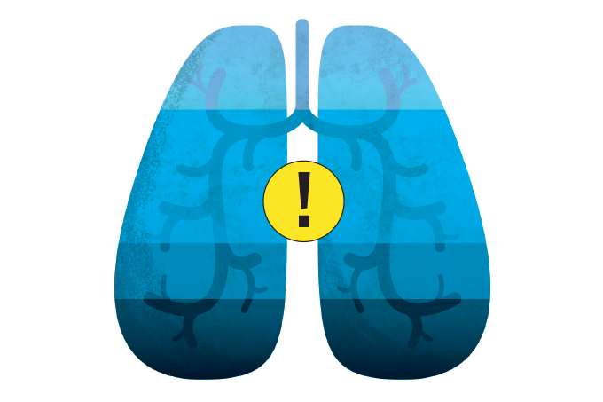

Como é o tratamento do coronavírus, dos cuidados em casa à UTI


Os sinais mais brandos geralmente envolvem febre, tosse seca, dor de garganta e coriza. Analgésicos e antitérmicos podem ser utilizados para controlar a temperatura e aliviar incômodos no corpo. É preciso tomar cuidado, entretanto, com a automedicação, principalmente diante de uma enfermidade nova.
Remdesivir desponta como a maior esperança contra COVID-19
Na busca internacional e sem precedentes para combater um vírus, há duas frentes. Uma é a produção de uma vacina eficiente e segura para imunizar boa parte da população mundial, o que transformaria o novo coronavírus num mal menor. A outra aposta dos cientistas e médicos é descobrir medicamentos que aplaquem os efeitos de quem já sofre o processo inflamatório acelerado provocado pela Covid-19.